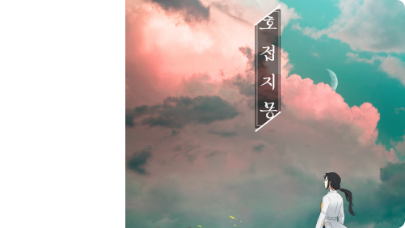
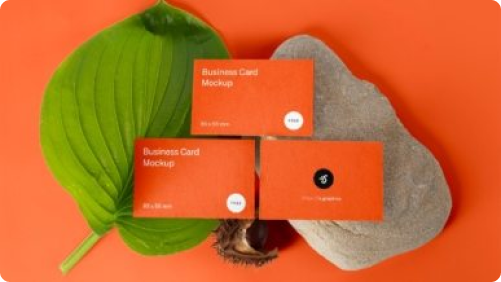
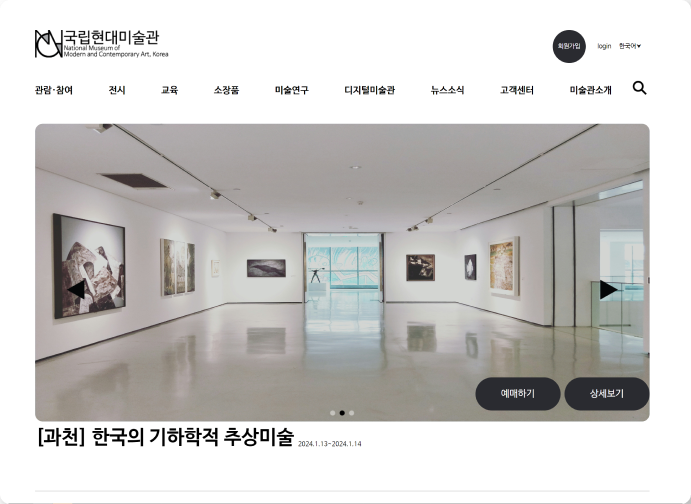
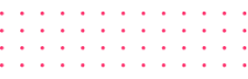
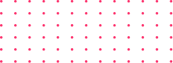
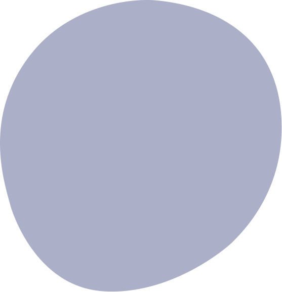
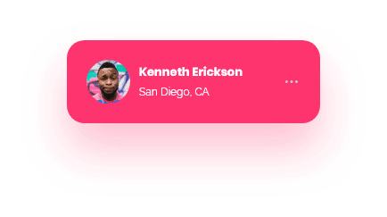
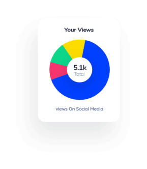

카페 배너 디자인

북다자인

디자인 3번

Design
CONTACT
지금까지 포트폴리오를 봐 주셔서 감사합니다!
저에 대해 더 알고 싶으시다면….
Team Project
꽃집에서 픽업과 배달이 어려웠던 경험에서 착안해 꽃집과 고객을
연결하고, 더 나아가 B2B로 정기적 납품이 필요한 고객을 위한 UI / UX
디자인을 기획하게 되었습니다. 팀원간 소통과 협업의 중요성을 알게
되었습니다.
제작기간 2주
본인기여도 33%
꽃집사
#GooleSulvey #Figma
03
Portpolio — 03
국립현대미술관
#HTML #CSS #Javascript


제작기간: 2주
02
Portfolio — 02
오뚜기
#HTML #CSS #Javascript #JQuery
반응형으로 제작한 두번째 프로젝트입니다. 스킵 메뉴를 적용하여
웹접근성을 맞추었고, 자바스크립트로 다양한 동적 효과들을 적용하며
함수를 익힐 수 있었습니다. 외부에서 데이터를 받아와 매번 새로운
레시피를 제공하도록 하였습니다. 탑버튼과 사이트맵을 구현하였으며,
반응형으로 만들어 편의성을 높였습니다.

제작기간: 2주
01
Portpolio — 01
국립현대미술관
#HTML #CSS #Javascript #JQuery
첫 프로젝트로 국립현대미술관을 작업하며, 스킵메뉴 등으로 웹접근성과
표준성에 맞추었습니다. 모던한 디자인에 비해 고객센터 등이 없어 사용자
편의성을 개선하보고자 제작하게 되었습니다. 또한 서브페이지를 만들어
로그인 기능을 구현하였습니다. 도중 가로스크롤이 생기는 문제가
있었으나, 포지션에 대해 이해하는 계기가 되었습니다.
제작기간: 4주


SKILL
HTML / CSS
Jquery
Java Script
SCSS
React
Figma
illustrator
Pothoshop

Profile
이름:
유선아
생년:
1999년 10월
거주:
경기도 화성시
메일:
suna99_yu@naver.com
Educaiton
덕성여자대학교 심리학과 전공 / 문화인류학과 복수전공
디지털역량 제고를 위한 웹구조 언어&웹스타일링 언어 기초 - 수료
스마트-웹디자인&웹퍼블리셔 양성과정 - 수료
Lisence
자동자 운전면허 (2종)
웹디자인 기능사 필기 자격
ABOUT ME




코드의 흐름을 읽다
흘러가는 코드처럼
막힘없는 신입 유선아입니다
logo
ABOUT ME
SKILL
PORTFOLIO
DESIGN
CONTACT
첫 프로젝트로 국립현대미술관을 작업하며, 스킵메뉴 등으로 웹접근성과
표준성에 맞추었습니다. 모던한 디자인에 비해 고객센터 등이 없어 사용자
편의성을 개선하보고자 제작하게 되었습니다. 또한 서브페이지를 만들어
로그인 기능을 구현하였습니다. 도중 가로스크롤이 생기는 문제가 있었으나,
포지션에 대해 이해하는 계기가 되었습니다.